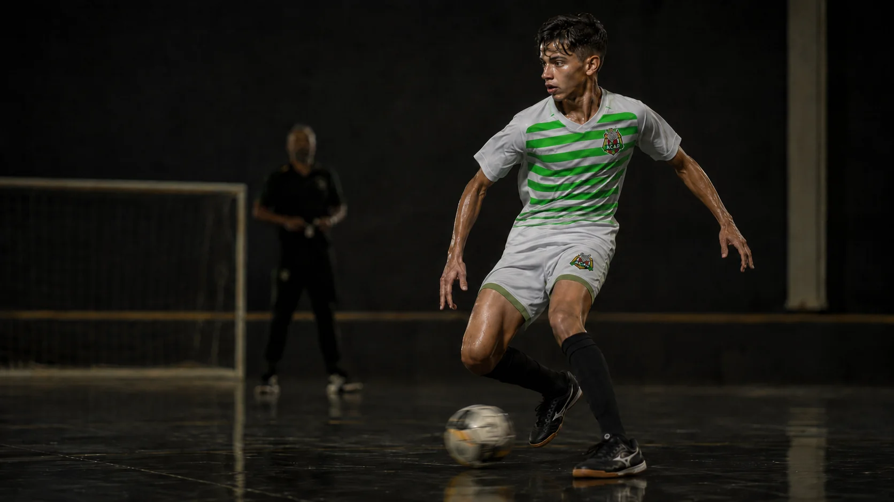
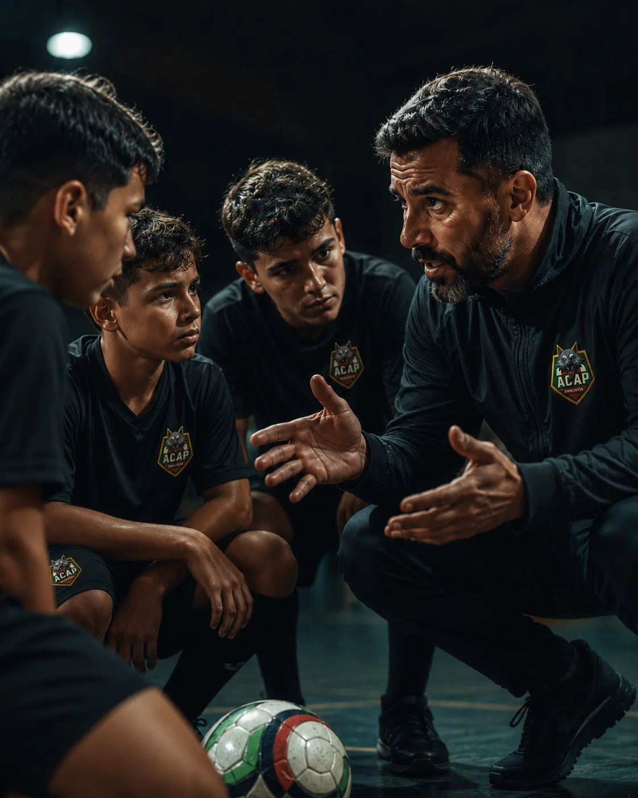

PROJETO ACAP
Formamos jogadores para o alto rendimento. A ACAP Academy é o projeto que acompanha o atleta do Sub-9 ao Sub-16 com um trabalho de médio e longo prazo — sem atalho, sem pressa — e que já vem dando resultado dentro e fora de quadra.
A ACAP Academy é o projeto de formação para o alto rendimento da ACAP Futsal para as categorias Sub-9 ao Sub-16. Não prometemos atalho: é um trabalho de médio e longo prazo, que acompanha o atleta ano após ano — da formação dos fundamentos ao amadurecimento tático e mental — até ele estar pronto para o próximo degrau.
É o mesmo método que já formou +1000 atletas e revelou +70 para o futsal de alto nível desde 1995. A Academy é esse processo, organizado e intencional, desde o Sub-9.

Antes da Academy, todo atleta passa (ou pode passar) pela escolinha — mas os objetivos de cada momento são bem diferentes.
O primeiro contato com o futsal: gosto pelo jogo, base motora e os primeiros fundamentos, sem cobrança de resultado.
O projeto da ACAP que prepara o atleta, Sub-9 ao Sub-16, para o alto rendimento: um trabalho estruturado de médio e longo prazo, com técnica, físico, tático e mental.
Formação para o alto rendimento não é só treino técnico — é uma estrutura em volta do atleta.
Sessões estruturadas por categoria, com plano técnico-tático de médio e longo prazo — sem atalho, sem pressa.
Acompanhamento de desempenho e prevenção de lesões.
Exposição a jogos de alto nível, dentro e fora de casa.
Fisioterapia, nutrição e preparação física especializada.
Atenção à rotina e ao desempenho escolar do atleta-estudante.
Nenhum atleta chega pronto ao Sub-16. Cada fase da Academy prepara o terreno para a próxima.
Fundamentos técnicos, gosto pelo jogo e primeiras noções de disciplina e coletivo.
Técnica refinada e os primeiros conceitos táticos de posicionamento e leitura de jogo.
Tática avançada, preparação física específica e exposição a competições mais fortes.
Preparação mental, protagonismo em quadra e o próximo degrau: o futsal de alto nível.
Um atleta de alto rendimento não nasce pronto — é construído em quatro frentes, ao mesmo tempo.
Fundamentos refinados até virarem automáticos: passe, condução, finalização e leitura de jogo.
Preparação física específica para o futsal de alta intensidade, com prevenção de lesões.
Entendimento de sistemas de jogo, transições e tomada de decisão sob pressão.
Confiança, foco e resiliência para competir nos momentos que decidem o jogo.
Alto rendimento se constrói com gente especializada em cada frente do desenvolvimento do atleta.
Condução tática e técnica dos treinos e jogos.
Planejamento de carga, prevenção de lesões e performance.
Cuidado, recuperação e acompanhamento de saúde do atleta.
Suporte mental, foco e gestão de pressão competitiva.
Ponte entre clube, escola e família.
Não é promessa — é o retrato do mesmo método aplicado há três décadas na base da ACAP.
Campeão Federação Paulista de Futebol de Salão
Atletas revelados
Atletas formados desde 1995
Categorias Sub-9 ao Sub-16 com maturidade pra iniciar essa jornada de médio e longo prazo.
Atletas de fora do clube que já competem e querem um ambiente de alto nível para crescer.
Quem enxerga no futsal um caminho real — profissional, universitário ou de formação de caráter.
Fale com nossa equipe pelo WhatsApp para agendar uma avaliação. A partir dela, indicamos a turma e a categoria mais adequadas para o atleta.
Não. A Academy recebe tanto atletas da base ACAP quanto novos talentos de fora do clube, desde que tenham a maturidade para a jornada do Sub-9 ao Sub-16.
A grade varia por categoria e é organizada em ciclos de médio e longo prazo. Nossa equipe te passa os horários certos assim que confirmar a turma do atleta.
Não prometemos atalho. Formamos o atleta com um processo sério e consistente — o mesmo que já revelou +70 jogadores para o futsal de alto nível desde 1995.
Pelo WhatsApp oficial do clube ou pelo Instagram @acap_futsal.
Peneiras e avaliações da ACAP Academy — fale com a nossa equipe e agende sua avaliação.